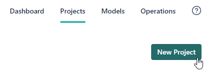
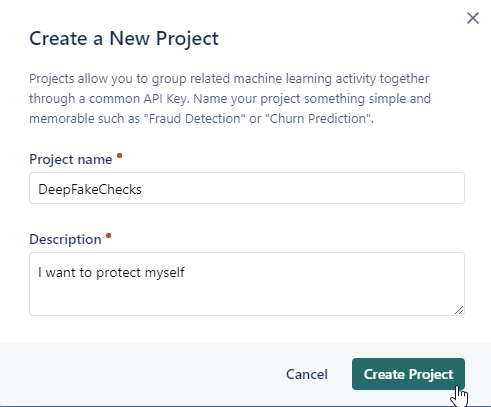
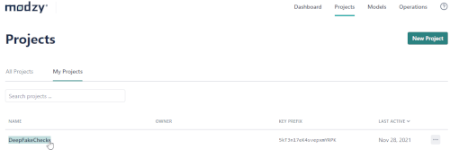
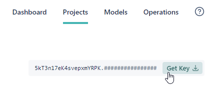

The setup is done right away.
To get access to the AI model, you need a free Modzy account.
Use this link to register.
After Login to Modzy create a new project.

Then enter a project name and description.

Now select the project.

After that you can download the key.

Enter this key in the input field above and click 'Set ApiKey'.
You're done.
Visit YouTube and review suspicious videos.
You have a new button in the player.